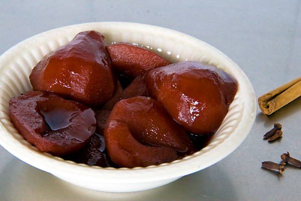

Stoofperen met rode wijn

Description
A simple, but delicious recipe for poached pears in red wine. You only need a handful of ingredients.
You can eat the pears as a dessert, warm or cold, but in the Netherlands we traditionally eat stewed pears as a
side dish for Christmas.
I prefer them cold.
Ingredients
- 4 large firm pears - peeled, cored, and quartered
- ½ cup white sugar
- peel of 1 orange
- 1 cinnamon stick
- 1 (750 milliliter) bottle red wine
Steps
-
Place pears in a saucepan. Add sugar, orange peel, and cinnamon stick.
Pour in red wine to cover pears completely.
Bring to a boil; reduce heat and simmer gently until pears are soft and deep red in color, about 2 1/2
hours.
-
Transfer pears to a serving plate using a slotted spoon. Serve the pears warm or cold.